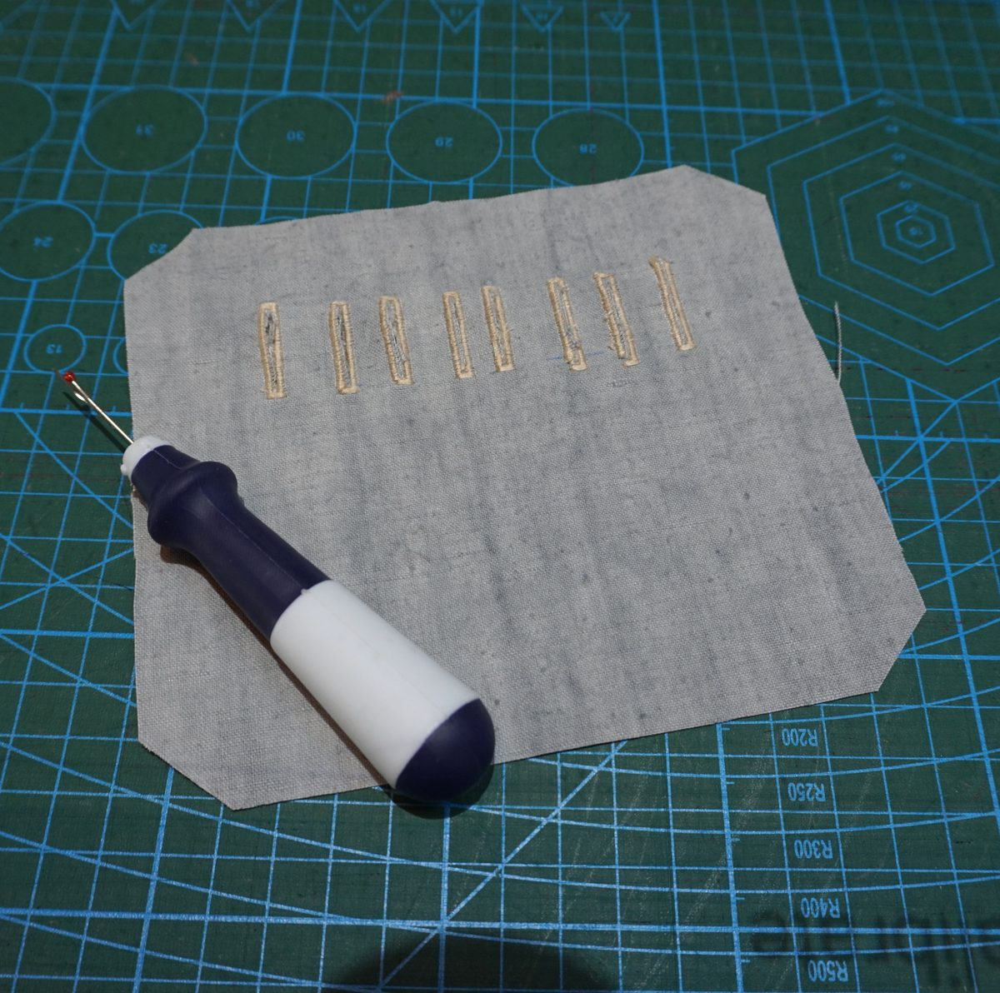
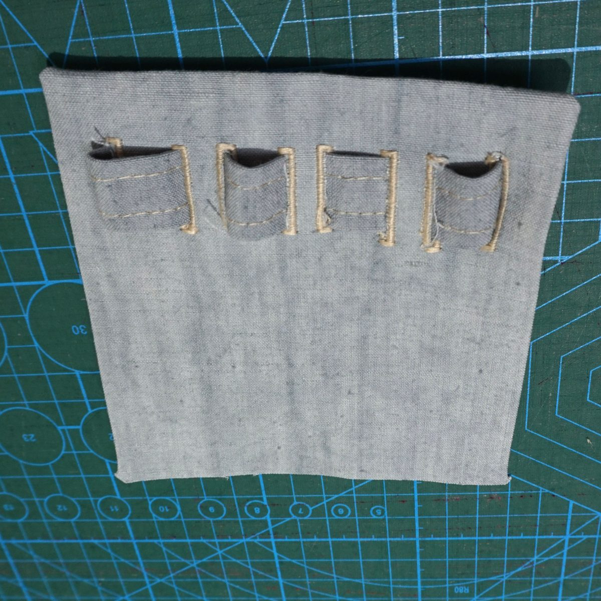
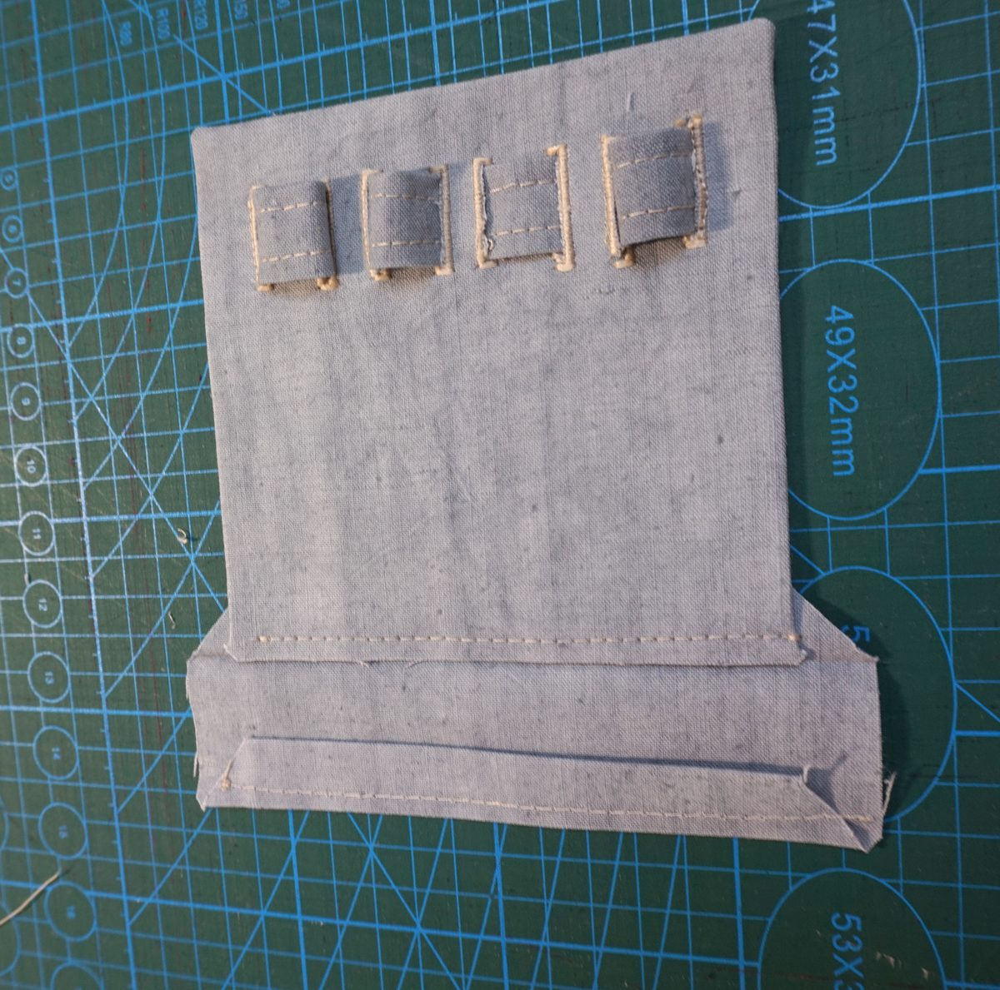
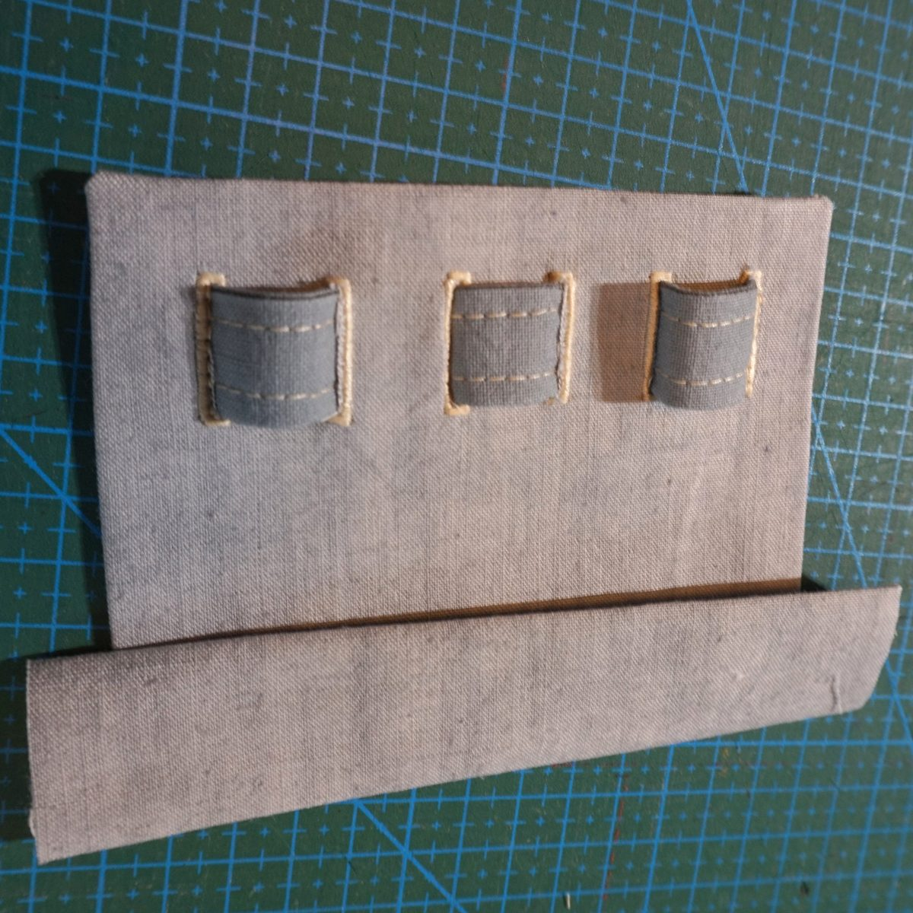
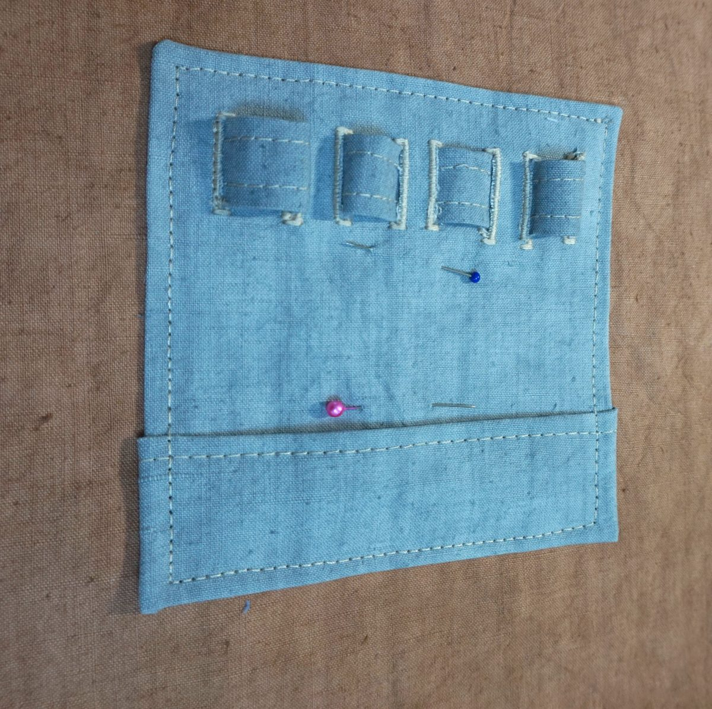

Mode d'emploi : couture et assemblage de la cartouchière (porte-stylos et lunettes)
Le patron se télécharge sur la page Cartouchière. Les pièces portent le nom indiqué sur le PDF : Principale, Poche, Ruban, Thermocollant.
Repassez le thermocollant sur l'envers de la pièce Principale.
Faites les 8 boutonnières sur les lignes rouges, puis ouvrez-les (au découd-vite, sans couper les points).

Boutonnières ouvertes au découd-vite Repliez les deux coins hauts vers l'envers (face thermocollée).

Les coins hauts repliés vers l'envers Repliez les remplis des trois côtés (haut, gauche, droite) vers l'envers. Vous obtenez ainsi deux angles du haut propres, formés par les replis. Pour la version simplifiée, repliez les remplis des quatre côtés.

Remplis repliés vers l'envers : deux angles propres en haut Préparez le Ruban : repliez les bords le long des lignes bleues, puis surpiquez les deux côtés.
Passez le Ruban dans les boutonnières, en alternant dessus et dessous.

Le ruban forme quatre passants Cousez les extrémités du Ruban à l'intérieur de la première et de la dernière boutonnière, pour dissimuler les coutures.

Extrémités du ruban cousues, vues de l'envers Poche : repliez tous les remplis vers l'intérieur. (Version avec poche uniquement.)
Glissez le bas de la pièce Principale dans le petit repli de la Poche, puis repliez les extrémités de la Poche vers la face thermocollée de la Principale. Les stylos, retenus par le bas, ne peuvent plus glisser.

Extrémités de la Poche repliées 
Poche placée contre le bas de la Principale Placez la cartouchière à l'emplacement habituel d'une poche de poitrine gauche et surpiquez les 4 côtés, en alignant la surpiqûre sur celles du vêtement.

Cartouchière surpiquée sur les 4 côtés
Version simplifiée : mêmes étapes, sans la poche : suivez les étapes 1 à 7, puis l'étape 10 (remplis sur les 4 côtés à l'étape 4).
Un mot technique ? Voir le glossaire.